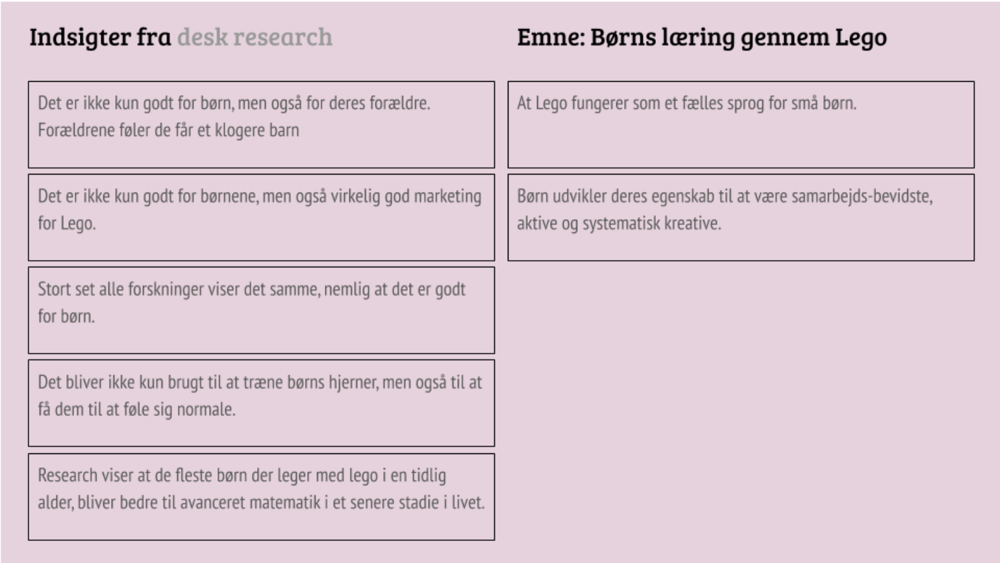
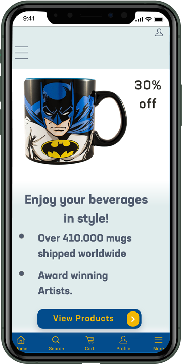
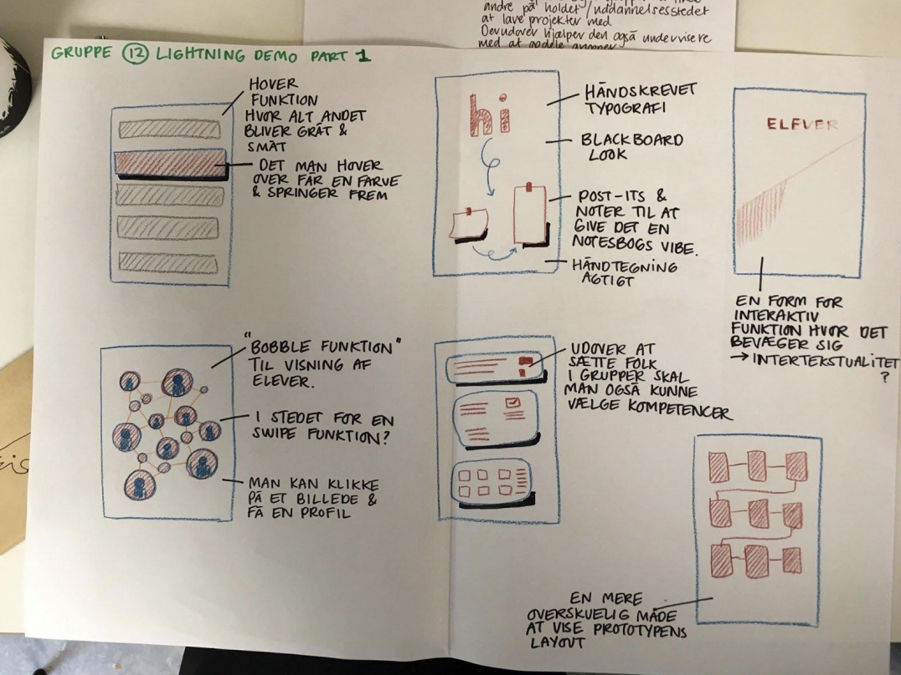

Som introduktion til forløbet lærte vi om indholdsproduktion. Herunder lærte vi om copy og microcopy og såkaldte "Dark Patterns" på internettet
Som den første opgave i forløbet grundlæggende UX, fik vi til opgave at lave dataindsamling for at teste de forskellige måder at researche på. Vi blev introduceret til desktop-, observations-, survey og interview research. Vi gik i dybden med nogle spørgsmål hvor vi kunne vælge imellem:
Lego brugt i sammenhæng med børns læring.
Brugen af visual reality ift. med ældre med demens.
Teenageres brug af sociale medier i forbindelse med mobning.
Jeg valgte at undersøge børns læring gennem leg med lego og fandt frem til nogle ret spændende indsigter, bl.a. at børn der leger med Lego i inden for de første 1000 dage af deres liv udvikler deres hjerne bedre til at klare matematiske problemer efter 7. klasse.

Se alt dokumentation for research her eller klik på billedet herover
I vores anden opgave under grundlæggende UX, fik vi til opgave at lave en webshop der solgte enten kaffekopper, frugt eller vinyl plader til en specifik målgruppe. Som mit fokuspunkt lavede jeg en webshop der solgte kaffekopper til forældre med småbørn og mit pitch var at forældre skulle drikke af kopper som deres børn også ville synes var sjove på et senere tidspunkt i deres liv og derfor var det comic book kopper. Vi skulle lave protypen i Adobe XD og det var første gang at vi virkelig fik lov at se hvad programmet kunne. Vi blev introduceret til UI kits og blev vedt om at lave minimum 7 sider til en webshop.
Her er resultatet af min webshop
I vores tredje og sidste opgave på UX forløbet, blev vi bedt om at lave et Google Design Sprint. Dette bundede ud i en app som skulle forbedre forholdene på KEA. Vi besluttede os for at vi ville lave en app der skulle gøre det nemmere at finde grupper til både projekter og lektiehjælp. Appen skulle kunne sortere folk efter kompetencer og på samme tid udfordre folk ved at sætte grupper sammen hvor folk kunne lære noget af hinanden.
Group'r App
Under selve designsprintet skulle vi følge en tidsplan som gav os opgaver for hver eneste dag. Vi skulle finde på idéer og så skulle gruppen stemme om hvilken idéer vi bedst kunne lide. Vi lavede tests af hinandens prototyper og skulle til aller sidst pitche vores app for resten af holdet.

Selvom vi ikke havde helt frie tøjler med appen, så synes vi alligevel at idéen var virkelig god. Vi fik god feedback for vores dokumentation og vores designprocess. At være en del af et team hvor man skal udvikle noget sammen inden for en specifik tidsramme var en stor udfordring, men derimod meget lærerig. Det handlede mere om processen om hvordan vi kom fra A til B end det handlede om produktet. Selvom der var en del forvirring omkring vigtigheden af indholdsproduktion, så fandt man langsomt ud af at det var en vigtig del af selve brugeroplevelses-processen og det er noget som UX-arbejdere skal tage meget seriøst hvis de gerne vil levere et godt produkt.